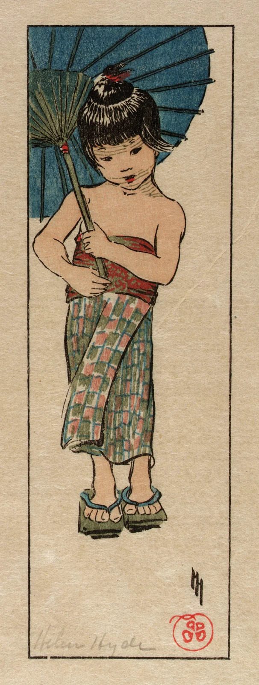

A blue-green canopy holds the cool; a touch of red keeps the warmth.
Ribs lead to handle, hands and sash.
Open paper slows the downward gaze.
Analogous blue-greens connect the figure.
Vermilion adds near-complementary tension.
A few lines suggest volume.
Cool and warm fields create shelter.
Editorial colours and ratio; not sampled pigments.
Colour woodcut on paper, 1905. [1]
Line defines; colour sets the rhythm.
Helen Hyde · 1868–1919. [2]
First in Japan in 1899; involved in carving and printing. [3]
Small hands steady a large canopy.
A slight tilt gives the pattern warmth.
Crop a broad curve at the top.
Keep quiet space below the feet.
70% paper + 25% blue-green + 5% red.
Place warmth where gestures meet.
Editorial colours and ratio; not sampled pigments.
Helen Hyde · A Summer Girl
Smithsonian American Art Museum · 1992.13.39
Original work: public domain.
Museum image: Unrestricted (Public Domain).
Appreciation: independent interpretation.